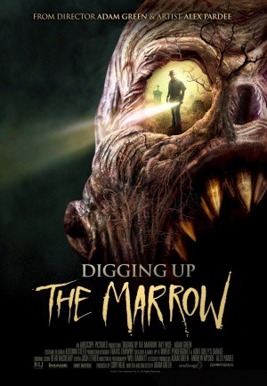

#7523 How to catch a Monster - Die Monster-Jäger
Alternativ: Digging Up the Marrow
 
 IMDB-Wertung: 5.8 / 10
IMDB-Wertung: 5.8 / 10  Metascore: 0
Metascore: 0 
Adam Green ist seit Kindertagen fasziniert von Monstern. Seine Leidenschaft ließ ihn ein Horrorfilmregisseur werden, was ihn nun zur Zielscheibe macht für den schrägen, allseits als Freak verspotteten William Dekker. Der behauptet steif und fest, Beweise für die wahre Existenz von Monstern liefern zu können, und macht den Filmemacher neugierig. Green lässt Überwachungstechnik aufbauen an von Dekker empfohlenen Orten. Tatsächlich zeigen die Aufnahmen bald Dinge, die Green an der Schulwissenschaft zweifeln lassen.
Jahr: 2014
Dauer: 88 Minuten
FSK: 16
Land: USA Studio: Hacienda Film Co.Tonspuren: DTS - ,
Untertitel:
Auflösung: 1080p (1920x1080) Größe: 4874 MB
Genre: Thriller, Horror, Drama, Fantasy, Mystery, Biographie
Regisseur: Adam Green
Drehbuch: Adam Green
Soundtrack:
Darsteller:
 Ray Wise als William Dekker
Ray Wise als William Dekker Adam Green als Adam Green
Adam Green als Adam Green- Will Barratt als Will Barratt
- Josh Ethier als Josh Ethier / Vance / Little Bigfoot
 Rileah Vanderbilt als Rileah Vanderbilt
Rileah Vanderbilt als Rileah Vanderbilt Kane Hodder als Kane Hodder
Kane Hodder als Kane Hodder Tom Holland als Tom Holland
Tom Holland als Tom Holland- Mick Garris als Mick Garris
 Steve Agee als Himself
Steve Agee als Himself- Steven Barton als Himself
- Dave Brockie als Oderus Urungus
- Don Coscarelli als Himself
- Evan Dickson als Himself
- Corri English als Herself
 Lloyd Kaufman als Himself
Lloyd Kaufman als Himself- Joe Lynch als Himself
 Laura Ortiz als Herself
Laura Ortiz als Herself Tony Todd als Himself
Tony Todd als Himself- Mathew Waters als Park Ranger , uncredited
- Sarah Elbert als Sarah Elbert
- Alex Pardee als Alex Pardee / Park Ranger
- Jimmy McCarthy als Sgt. Sean Ross
- Nic Henley als Harlequin
- Caitlyn Brisbin als Tombstone
- Robert Pendergraft als Shadow
- Arwen Green als Herself
Datei: X:\2014(G-M)\How to catch a Monster - Die Monster-Jäger (2014, FSK16, 1920x1080).mkv seit 15.11.2017
Festplatte: HD 2013(I-Z)-2014(A-Z)
 Es gibt insgesamt 136 Filme in der Gruppe '2014(G-M)'
Es gibt insgesamt 136 Filme in der Gruppe '2014(G-M)'